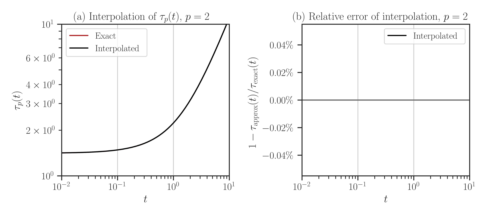

imate.InterpolateSchatten(kind=’mbf’)#
- class imate.InterpolateSchatten(A, B=None, p=2, options={}, verbose=False, ti=[], kind='mbf')
Interpolate Schatten norm (or anti-norm) of an affine matrix function using monomial basis functions (MBF) method.
See also
This page describes only the mbf method. For other kinds, see
imate.InterpolateSchatten().This class accepts only one interpolant point (\(q = 1\)). That is, the argument
tishould be only one number or a list of the length 1.A better method is
'imbf'which accepts arbitrary number of interpolant points. It is recommended to use the'imbf'(see imate.InterpolateSchatten(kind=’imbf’)).Note
If \(p=2\), it is recommended to use the interpolation with
mbfmethod since it provides the exact function values.- Parameters:
- Anumpy.ndarray or scipy.sparse matrix
Symmetric positive-definite matrix (positive-definite if p is non-positive). Matrix can be dense or sparse.
Warning
Symmetry and positive (semi-) definiteness of A will not be checked. Make sure A satisfies these conditions.
- Bnumpy.ndarray or scipy.sparse matrix, default=None
Symmetric positive-definite matrix (positive-definite if p is non-positive). Matrix can be dense or sparse. B should have the same size and type of A. If B is None (default value), it is assumed that B is the identity matrix.
Warning
Symmetry and positive (semi-) definiteness of B will not be checked. Make sure B satisfies these conditions.
- pfloat, default=2
The order \(p\) in the Schatten \(p\)-norm which can be real positive, negative or zero.
- optionsdict, default={}
At each interpolation point \(t_i\), the Schatten norm is computed using
imate.schatten()function which itself calls either ofimate.logdet()(if \(p=0\))imate.trace()(if \(p>0\))imate.traceinv()(if \(p < 0\)).
The
optionspasses a dictionary of arguments to the above functions.- verbosebool, default=False
If True, it prints some information about the computation process.
- tifloat or array_like(float), default=None
Interpolation point. For this class, the interpolation point should be a single point. If an empty list is given, i.e.,
[], a default interpolant point is set as \(t_1 = \tau_{p, 0}^{-1}\) (see the definition of \(\tau_p, 0\) in the Notes). The interpolator honors the exact function values at the interpolant point.
Notes
Schatten Norm:
In this class, the Schatten \(p\)-norm of the matrix \(\mathbf{A}\) is defined by
(1)#\[\begin{split}\Vert \mathbf{A} \Vert_p = \begin{cases} \left| \mathrm{det}(\mathbf{A}) \right|^{\frac{1}{n}}, & p=0, \\ \left| \frac{1}{n} \mathrm{trace}(\mathbf{A}^{p}) \right|^{\frac{1}{p}}, & p \neq 0, \end{cases}\end{split}\]where \(n\) is the size of the matrix. When \(p \geq 0\), the above definition is the Schatten norm, and when \(p < 0\), the above is the Schatten anti-norm.
Note
Conventionally, the Schatten norm is defined without the normalizing factor \(\frac{1}{n}\) in (1). However, this factor is justified by the continuity granted by
(2)#\[\lim_{p \to 0} \Vert \mathbf{A} \Vert_p = \Vert \mathbf{A} \Vert_0.\]See [1] (Section 2) and the examples in
imate.schatten()for details.Interpolation of Affine Matrix Function:
This class interpolates the one-parameter matrix function:
\[t \mapsto \| \mathbf{A} + t \mathbf{B} \|_p,\]where the matrices \(\mathbf{A}\) and \(\mathbf{B}\) are symmetric and positive semi-definite (positive-definite if \(p < 0\)) and \(t \in [t_{\inf}, \infty)\) is a real parameter where \(t_{\inf}\) is the minimum \(t\) such that \(\mathbf{A} + t_{\inf} \mathbf{B}\) remains positive-definite.
Method of Interpolation:
The interpolator is initialized by providing one interpolant point \(t_i\). The interpolator can interpolate the above function at arbitrary inquiry points \(t \in [t_1, t_p]\) using
\[(\tau_p(t))^{q+1} \approx (\tau_{p, 0})^{q+1} + \sum_{i=1}^{q+1} w_i t^i,\]where
\[\tau_p(t) = \frac{\Vert \mathbf{A} + t \mathbf{B} \Vert_p} {\Vert \mathbf{B} \Vert_p},\]and \(\tau_{p, 0} = \tau_p(0)\) and \(w_{q+1} = 1\). To find the weight coefficient \(w_1\), the trace is computed at the given interpolant point \(ti`\) argument.
Since in this class, \(q = 1\), meaning that there is only one interpolant point \(t_1\) with the function value \(\tau_{p, 1} = \tau_p(t_1)\), the weight coefficient \(w_1\) can be solved easily. In this case, the interpolation function becomes
\[(\tau_p(t))^2 \approx \tau_{p, 0}^2 + t^2 + \left( \tau_{p, 1}^2 - \tau_{p, 0}^2 - t_1^2 \right) \frac{t}{t_1}.\]The above interpolation is a quadratic function of \(t\). Hence, if \(p=2\), the above interpolation coincides with the exact function value for all range of \(t\). Because of this, it is recommended to use this interpolation method when \(p=2\).
References
[1]Ameli, S., and Shadden. S. C. (2022). Interpolating Log-Determinant and Trace of the Powers of Matrix \(\mathbf{A} + t\mathbf{B}\). arXiv: 2009.07385 [math.NA].
Examples
Basic Usage:
Interpolate the Schatten 2-norm of the affine matrix function \(\mathbf{A} + t \mathbf{B}\) using
imbfalgorithm and the interpolating points \(t_i = 10^{-1}\).>>> # Generate two sample matrices (symmetric and positive-definite) >>> from imate.sample_matrices import correlation_matrix >>> A = correlation_matrix(size=20, scale=1e-1) >>> B = correlation_matrix(size=20, scale=2e-2) >>> # Initialize interpolator object >>> from imate import InterpolateSchatten >>> ti = 1e-1 >>> f = InterpolateSchatten(A, B, p=2, kind='mbf', ti=ti) >>> # Interpolate at an inquiry point t = 0.4 >>> t = 4e-1 >>> f(t) 1.7374809371539675
Alternatively, call
imate.InterpolateSchatten.interpolate()to interpolate at points t:>>> # This is the same as f(t) >>> f.interpolate(t) 1.7374809371539675
To evaluate the exact value of the Schatten norm at point t without interpolation, call
imate.InterpolateSchatten.eval()function:>>> # This evaluates the function value at t exactly (no interpolation) >>> f.eval(t) 1.7374809371539675
It can be seen that the result of interpolation matches the exact function value. This is because we set \(p=2\) and in this case, interpolation with mbf method yields identical results to the exact solution (see Notes in the above). However, this is not the case for \(p \neq 2\).
Warning
Calling
imate.InterpolateSchatten.eval()may take a longer time to compute as it computes the function exactly. Particularly, if t is a large array, it may take a very long time to return the exact values.Passing Options:
The above examples, the internal computation is passed to
imate.trace()function since \(p=2\) is positive. You can pass arguments to the latter function usingoptionsargument. To do so, create a dictionary with the keys as the name of the argument. For instance, to use imate.trace(method=’slq’) method withmin_num_samples=20andmax_num_samples=100, create the following dictionary:>>> # Specify arguments as a dictionary >>> options = { ... 'method': 'slq', ... 'min_num_samples': 20, ... 'max_num_samples': 100 ... } >>> # Pass the options to the interpolator >>> f = InterpolateSchatten(A, B, p=2, options=options, kind='mbf') >>> f(t) 1.7012047720355232
You may get a different result than the above as the slq method is a randomized method.
Also, in the above, the interpolation point
tiwas not specified, so the algorithm chooses the best interpolation point.Interpolate on Range of Points:
Once the interpolation object
fin the above example is instantiated, callingimate.InterpolateSchatten.interpolate()on a list of inquiry points t has almost no computational cost. The next example inquires interpolation on 1000 points t:Interpolate an array of inquiry points
t_array:>>> # Create an interpolator object again >>> ti = 1e-1 >>> f = InterpolateSchatten(A, B, kind='mbf', ti=ti) >>> # Interpolate at an array of points >>> import numpy >>> t_array = numpy.logspace(-2, 1, 1000) >>> norm_array = f.interpolate(t_array)
Plotting Interpolation and Compare with Exact Solution:
To plot the interpolation results, call
imate.InterpolateSchatten.plot()function. To compare with the true values (without interpolation), passcompare=Trueto the above function.Warning
By setting
compareto True, every point in the array t is evaluated both using interpolation and with the exact method (no interpolation). If the size of t is large, this may take a very long run time.>>> f.plot(t_array, normalize=True, compare=True)
Since in the above example, \(p=2\), the result of interpolation is the same as the exact function values, hence the error is zero for all \(t\) as shown in the plot on the right side.
- Attributes:
- kindstr
Method of interpolation. For this class,
kindismbf.- verbosebool
Verbosity of the computation process
- nint
Size of the matrix
- qint
Number of interpolant points. For this class, q is 1.
- pfloat
Order of Schatten \(p\)-norm
Methods
__call__
eval
interpolate
bound
upper_bound
plot